【2024郑州工博会】百万广告投入，线上线下精准覆盖，展会曝光度直接拉满！
首页 / 【2024郑州工博会】百万广告投入，线上线下精准覆盖，展会曝光度直接拉满！2024郑州工业装备博览会
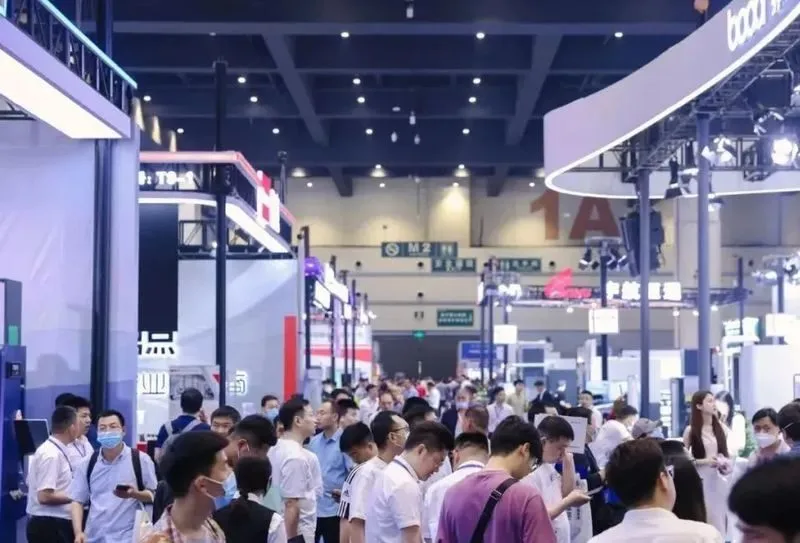
2024第20届郑州工业装备博览会（以下简称“郑州工博会”),将于2024年5月9-12日在郑州国际会展中心举办，展会设立机床展、激光钣金展、工业自动化展、机器人展、工业互联网展、物流展、五金机电展等七大主题展区，展会规模近70000平方米，2500家业内知名企业参展，集中展示先进制造装备、整体解决方案、柔性制造单元、智能制造系统、数字化工厂等业链创新技术，预计将吸引70000专业买家参观。
近日，展会宣传工作持续深入进行中，为充分保障展会人气和成效，5月郑州工博会强势出击，在线上线下投入百万广告，精准辐射专业买家，开启线上+线下广告的霸屏模式，打造展会超强曝光，引发行业共振！
线下
经过组委会多次实地考察与走访，在郑州北服务区、中牟服务区、原阳服务区、安阳服务区、鹤璧服务区、许昌服务区、漯河服务区、驻马店服务区、信阳服务区、焦作服务区等多个河南省内服务区及周边省市服务区、产业集聚地、市场等，耗资百万陆续投放大量户外广告，精准对接观众群体，涉及区域广、受众观众多、针对行业强，全面覆盖制造业人群，高频次展现、以点及面、快速覆盖，传递展会信息，全面为5月郑州工博会造势！
广告见证
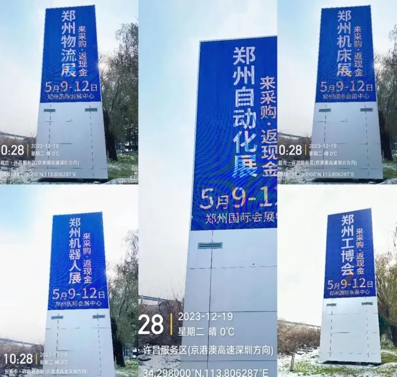
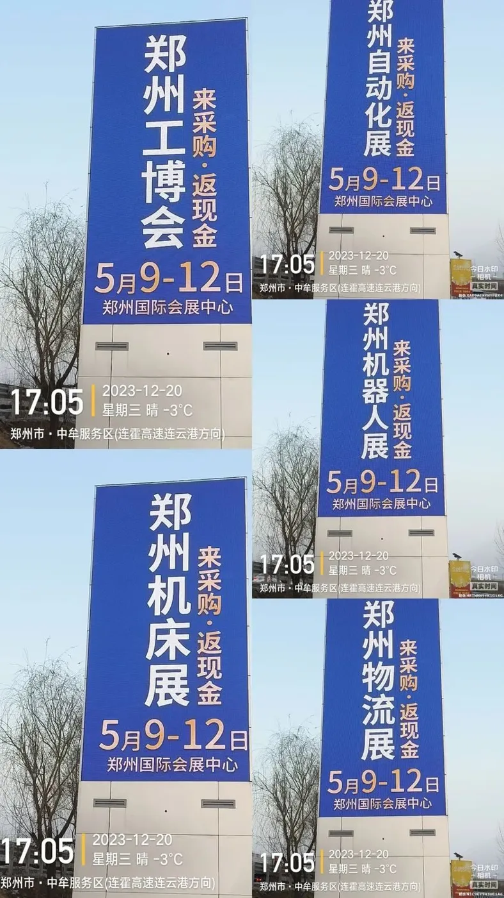
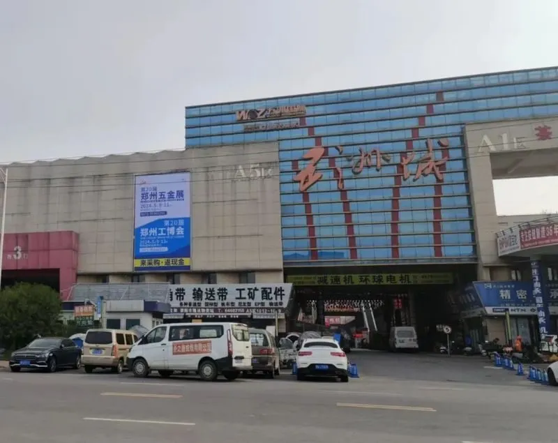
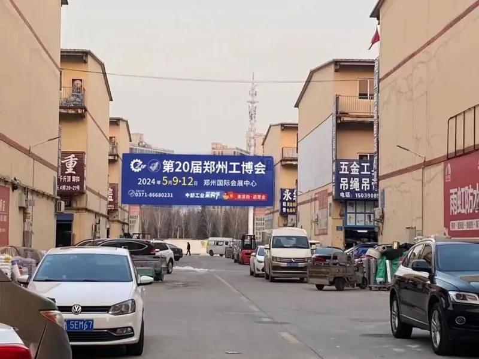
线上
同时在抖音、头条、朋友圈、百度等平台投放广告，精准匹配用户画像，投入大量经费进行展会信息植入，并利用搜狐号，头条号、一点号、网易号等平台建立自媒体矩阵，吸引大批高质量高精准观众，拓宽优质观众，整合100+媒体以及行业知名媒体资源，扩大展会影响力。
抖音广告
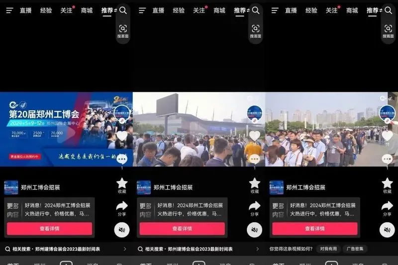
朋友圈广告
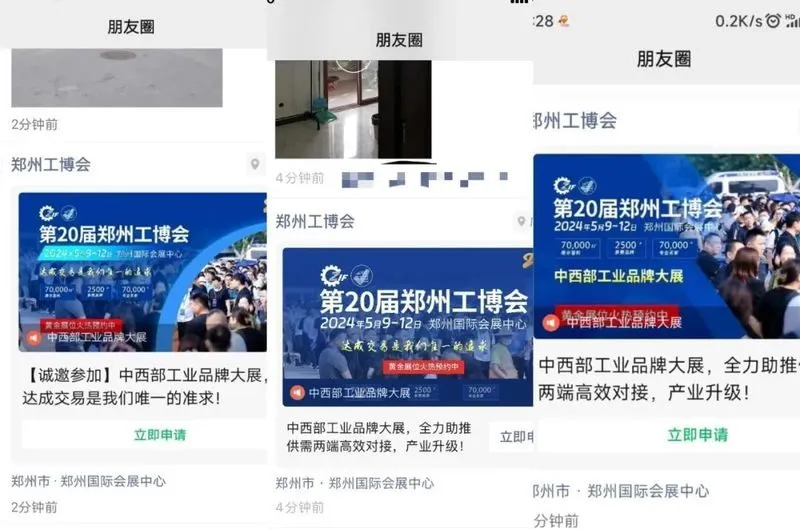
百度广告
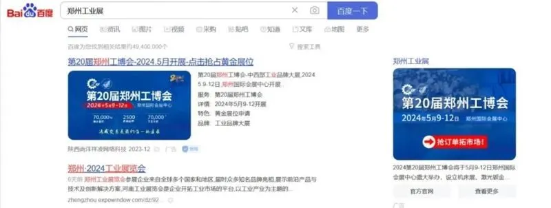
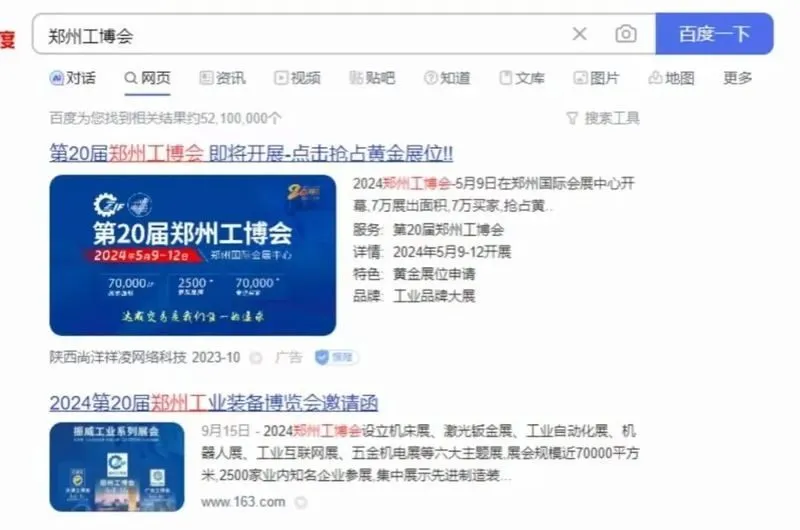
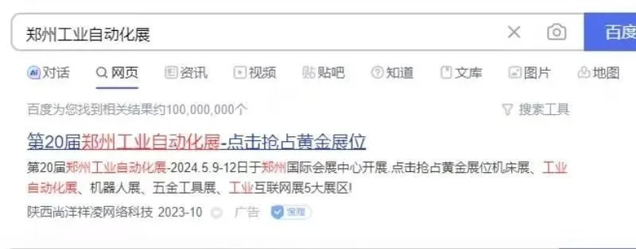
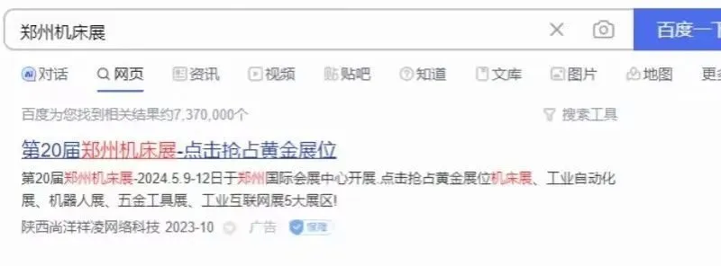
媒体广告
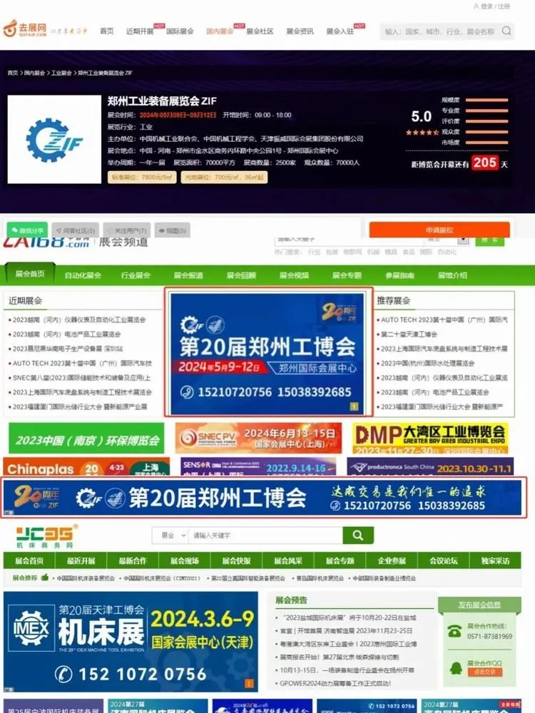
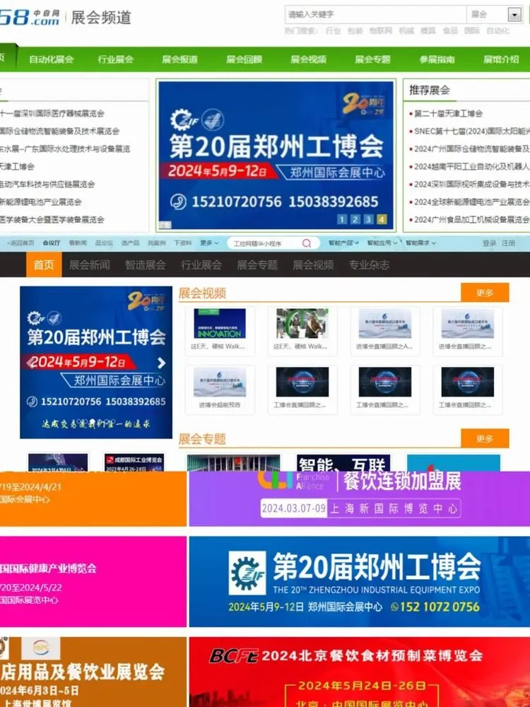
地推
目前，观众邀约团队先后深入新能源汽车、医疗器械、铝工业、钢材、汽车、广告、电工等各大用户行业展会，走访河南、山东等地，进行观众一对一邀请，派发展会资料，真实了解企业实际生产情况，精准对接观众需求。
见证
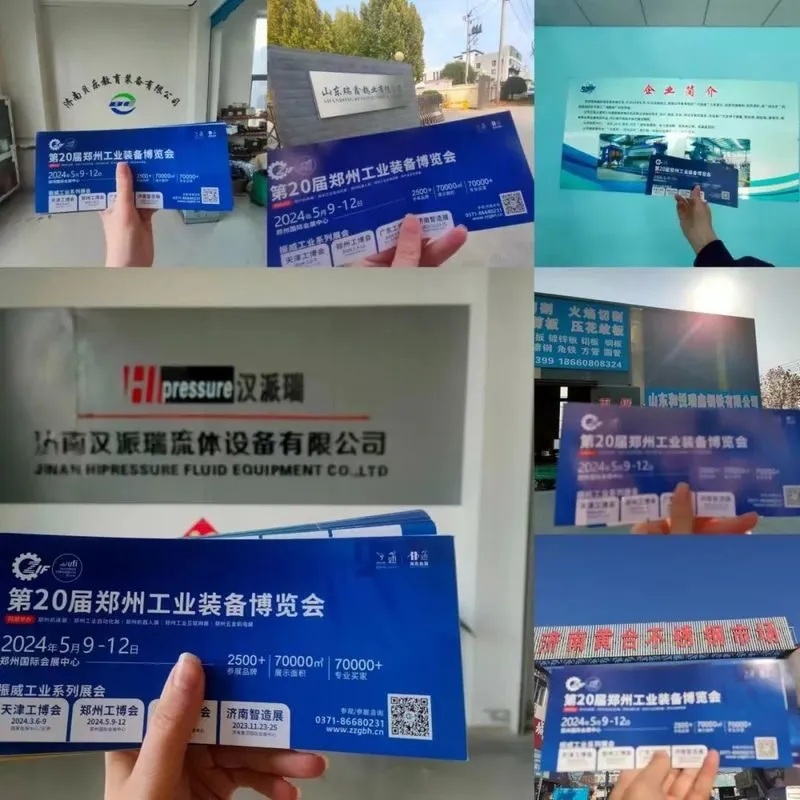
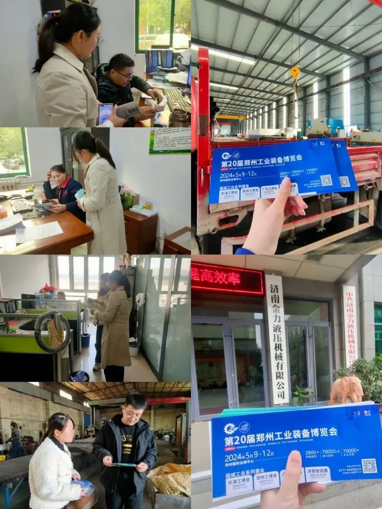
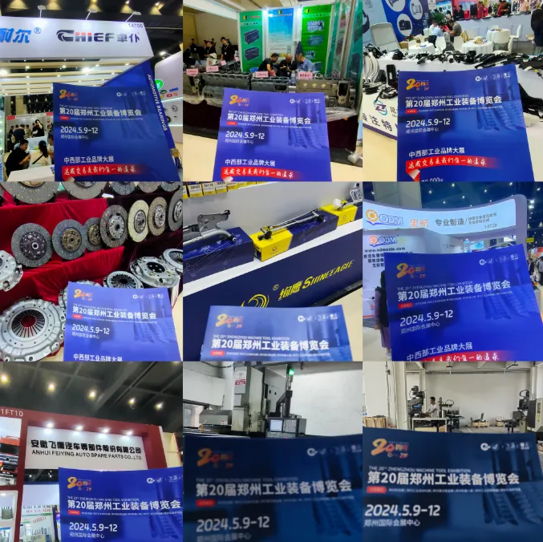
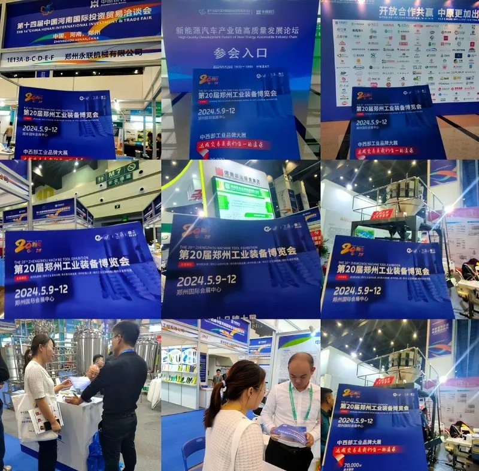
目前观众预登记人数已达一万余人，郑州工博会观众邀约团队工作结果成效显著，在接下来的时间里，邀约团队将继续扩大宣传力度，全力整合行业资源，持续发力线上线下多渠道推广，精准、快速、有效传播居会信息，进一步夯实买家宣传工作，以保证展商参展效益最大化，全力以赴打造一场高品质盛会！
锁定黄金五月，抢占中部市场！
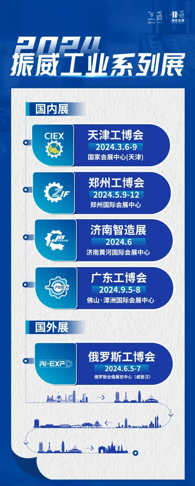